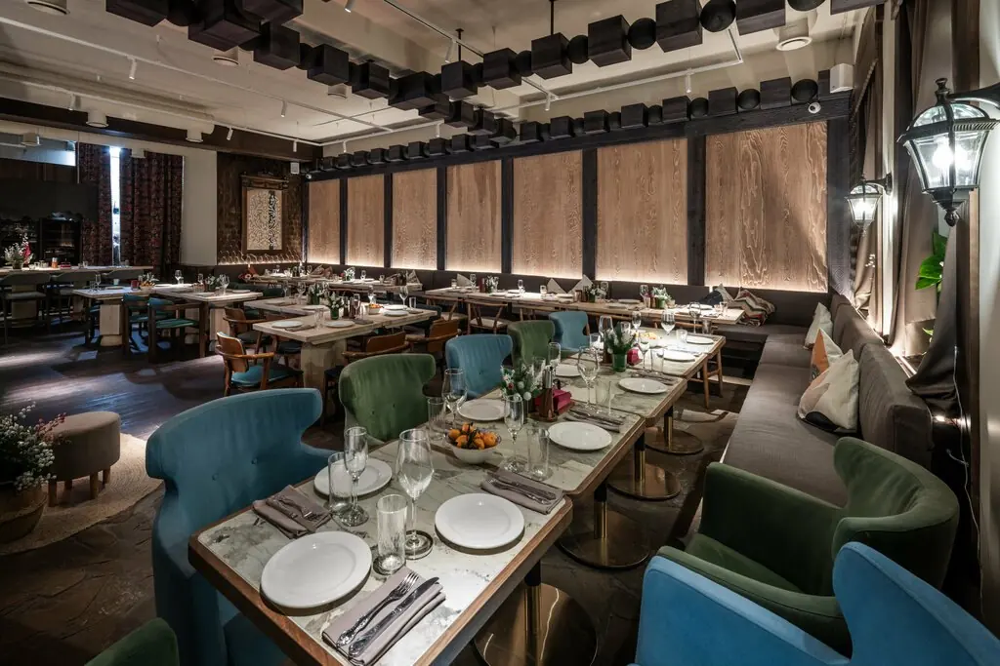
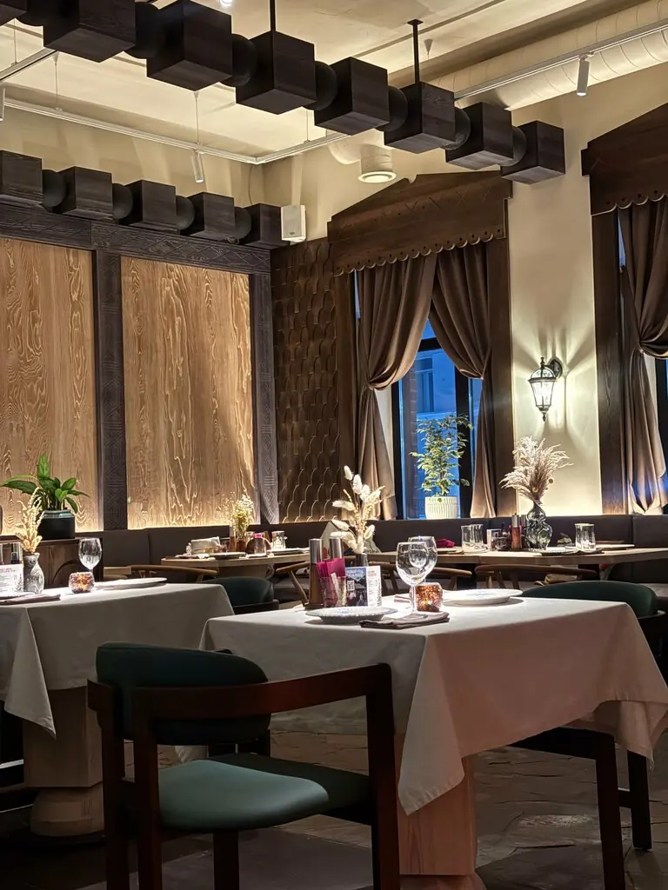
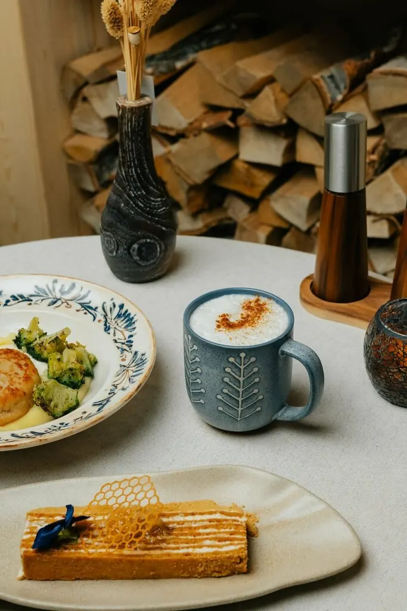
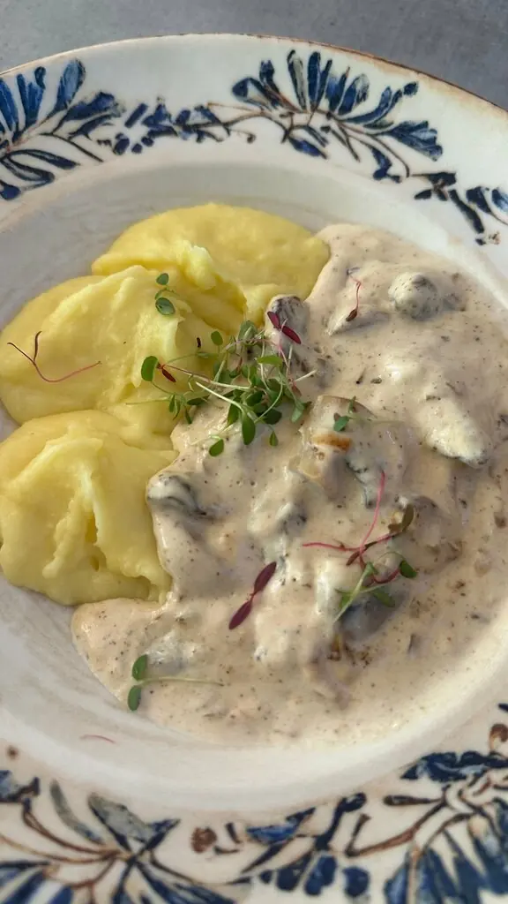
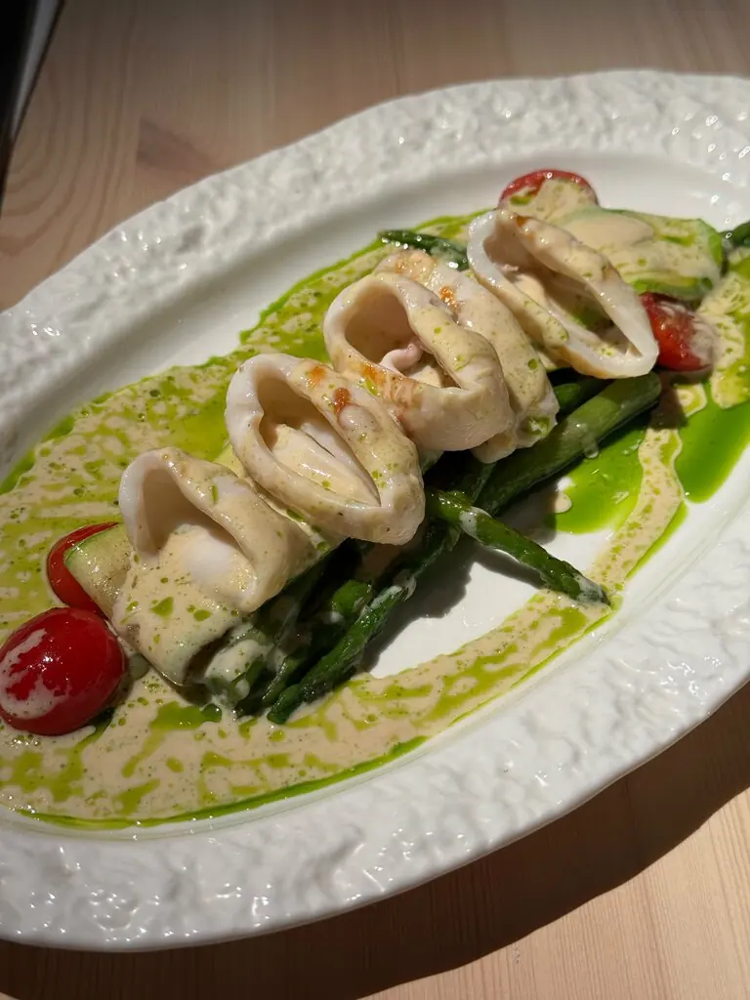

Вся Россия за одним столом
Краеведческий ресторан на Красном проспекте: от сибирской ухи до бурятских хушуров и командорского кальмара. Такие блюда не найти в обычном меню.
4,8 · 768 оценок
Меню как маршрут
Куда поедем сегодня?
1
Сибирь
Костёр, река и погребКостровая сибирская уха с лососем и щукой920 ₽
Грузди бочковые с домашней сметаной790 ₽
Котлета из щуки на копчёных сливках1 140 ₽
Котлеты из кролика с гречей и белыми грибами1 240 ₽
2
Тайга
Шишки, ягоды, папоротникТаёжный с уткой, медовыми яблоками и брусничным соусом980 ₽
Паштет из цыплёнка с сосновыми шишками740 ₽
Жареный картофель с папоротником и вешенками880 ₽
С цыплёнком и маринованными опятами960 ₽
3
Байкал и Бурятия
Омуль, оленина, лепкаСогудай из омуля940 ₽
Хушуры из двух видов мяса840 ₽
Шарбин с олениной880 ₽
Блины с мёдом340 ₽
4
Дальний Восток
Океан и его дарыКомандорский кальмар со спаржей1 180 ₽
Олюторская сельдь с молодым картофелем760 ₽
Фирменный с сахалинскими морепродуктами1 180 ₽
Трубочки с морепродуктами860 ₽
5
Дом
Куда возвращаютсяБорщ с говядиной и солёной грудинкой860 ₽
Говядина по-строгановски с пюре1 480 ₽
Медовик660 ₽
Баскский чизкейк с сибирской ягодой660 ₽
Листайте маршрут вбок. Блюда и цены с Яндекс Карт, деление на регионы для примера, актуальное меню уточняйте.
О нас
Открыли подруги, зовут к себе соседи
Ресторан открыли четыре девушки. С тех пор здесь принимают как дома: живая музыка, большой выбор настоек и зал, где хочется задержаться подольше.




Принимают как у себя дома.Городской житель
Очень вкусная еда, в особенности мясо, красивая живая музыка, классная атмосфера.Иван Чагов
Всё вкусно, необычно. Цены очень хорошие. Всё невероятно понравилось!Наталия Дудина
Зайдите к соседям
АдресНовосибирск, Красный проспект, 22
ЧасыПн–чт 12:00–23:00, пт–сб 12:00–00:00, вс 13:00–23:00
Телефон+7 913 916-10-22